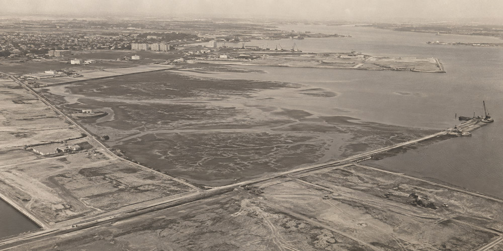
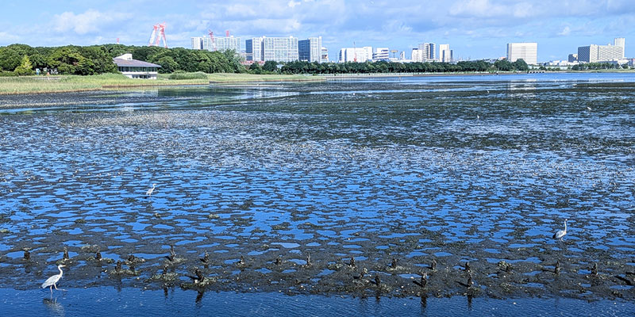

1950年代まで かつての谷津の海辺
大規模な埋め立てが進む前、谷津周辺には遠浅の海と広い干潟が続いていました。現在の谷津干潟もその一部で、採貝や潮干狩りなど、人々の暮らしや楽しみと結びついた場所でした。
1960～70年代 失われていく干潟
高度経済成長期の1960年代以降、東京湾沿岸では工業用地や住宅地を確保するための埋め立てが急速に進みました。海岸線を埋めていく流れの中で、谷津干潟周辺でも1971年から1974年にかけて埋め立て事業が行われ、かつて連続していた干潟は、周囲を造成地に囲まれた長方形の区画として取り残されます。東京湾に面していた干潟の多くはこの時期に姿を消し、現在まとまった形で残っているのは、谷津干潟と三番瀬などごく一部に限られます。谷津干潟もまた、消失か存続かの分かれ目に立たされていました。

※1970年代の埋め立ての様子をイメージした生成画像1970～80年代 干潟を守った市民運動
埋め立てと道路建設によって干潟が消えていく中で、「この自然を残したい」という声が、地元の市民や研究者の間から次第に高まっていきました。 1971年頃からの埋め立て工事や計画に対し、市民団体による保護運動が始まりました。谷津干潟は「埋め立てや開発を止めるべき場所」として広く注目されるようになります。こうした地域の熱心な働きかけが行政を動かし、1980年代には干潟を保全する方向へと政策が転換されました。1988年（昭和63年）11月には、シギ・チドリ類の集団渡来地として国の鳥獣保護区（現在の国指定谷津鳥獣保護区）に指定され、その大部分が特別保護地区として厳しく保護されることになりました。谷津干潟は、地域の手によって消失の危機から守られた干潟なのです。
1993年 ラムサール条約への登録
1993年（平成5年）6月10日、谷津干潟は泥質干潟およびシギ・チドリ類の渡来地として、ラムサール条約（特に水鳥の生息地として国際的に重要な湿地に関する条約）の登録湿地となりました。干潟としては初めての登録です。砂質の干潟が多い東京湾の中で、谷津干潟は泥質をふくむ干潟であり、泥の中の生きものを餌とするシギ・チドリ類にとって特に重要な採餌の場となっています。市街地と高速道路に囲まれながら国際的に重要な湿地と認められたこの場所は、都市と自然が共存する象徴的な事例として、現在も研究や環境教育の場となっています。

※現在の谷津干潟2020年代～現在 現在、そして未来へ
現在の谷津干潟は、国指定谷津鳥獣保護区およびラムサール条約登録湿地として保全管理が続けられています。「谷津干潟自然観察センター」を拠点に環境学習や観察活動が行われ、四季を通して多様な野鳥が見られる、シギ・チドリ類の重要な渡来地となっています。市民ボランティアによる清掃やモニタリングも継続的に行われ、人の手が加わり続けることで、この環境は保たれています。
谷津干潟は、ただ「残された自然」ではありません。一度は消えかけ、地域の人々の手で守られ、いまも人と関わり合いながら維持されている、生きた環境です。干潟の恵みと渡り鳥の姿を次の世代へ伝えるために、地域・行政・研究機関・市民が協力しながら、保全と活用の両立を目指しています。